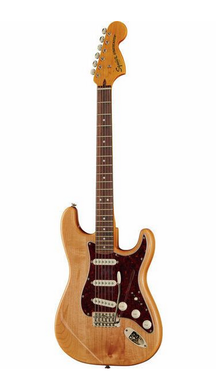

Squier CV 70s Strat

Electric Guitar
Classic Vibe series
Body: Poplar
Bolt-on neck: Maple
Fingerboard: Indian laurel
Neck profile: C
Pearloid Dots fingerboard inlays
Fingerboard radius: 241 mm (9.5")
Scale: 648 mm (25.5")
Nut width: 41.9 mm (1.65")
Bone nut
21 Narrow Tall frets
4-Ply Tortoise shell pickguard
Tonabnehmer: 1 Fender Designed Alnico Single Coil (bridge), 1 Fender Designed Alnico Single Coil (middle) and 1 Fender Designed Alnico Single Coil (neck)
Master Volume, Tone 1 (Neck Pickup) und Tone 2 (Bridge/Middle Pickup) controls
5-Way switch
6-Saddle Vintage style synchronised tremolo
Nickel hardware
Vintage style machine heads
Strings: NPS .009 - .042
Colour: Natural